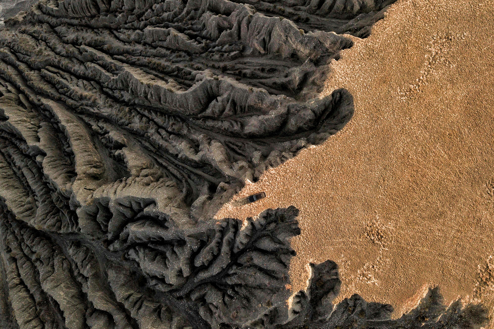

Análisis territorial, teledetección y gestión de recursos naturales al servicio de la conservación y el medio ambiente.
Sobre Mí
About
Ingeniero Forestal y Analista Geoespacial con experiencia internacional en gestión ambiental y modelización espacial. Ha trabajado con el Organismo Autónomo de Parques Nacionales (OAPN) y en investigaciones sobre prácticas agrícolas sostenibles. En Darwin Geospatial, aporta su expertise en análisis territorial, teledetección y gestión de recursos naturales para desarrollar soluciones geoespaciales que conectan la ciencia ambiental con la tecnología.
Publicaciones
Publications
Próximamente
Proyectos
Projects

Darwin Maps
Plataforma GeoespacialAnálisis territorial y modelización espacial para la plataforma de visualización geoespacial de Darwin. Contribuye con expertise en teledetección y gestión de capas de datos ambientales.

Soil SaveR
Investigación & Open DataAnálisis de erosión y gestión de datos territoriales para el proyecto de inteligencia de erosión. Aporta conocimiento en gestión forestal y conservación de suelos.
Trayectoria
Career
Socio & Analista Geoespacial
Managing Partner & Geospatial Analyst
Darwin Geospatial
Análisis territorial y modelización espacial para proyectos de monitoreo ambiental y conservación.
Organismo Autónomo de Parques Nacionales
Spanish National Parks Authority (OAPN)
Gestión ambiental y conservación en el sistema de parques nacionales de España.
Prácticas Agrícolas Sostenibles
Sustainable Agricultural Practices
Investigación en prácticas agrícolas sostenibles y gestión de recursos naturales.
Ingeniería Forestal
Forest Engineering
Formación en ingeniería forestal con especialización en análisis geoespacial y gestión de recursos naturales.